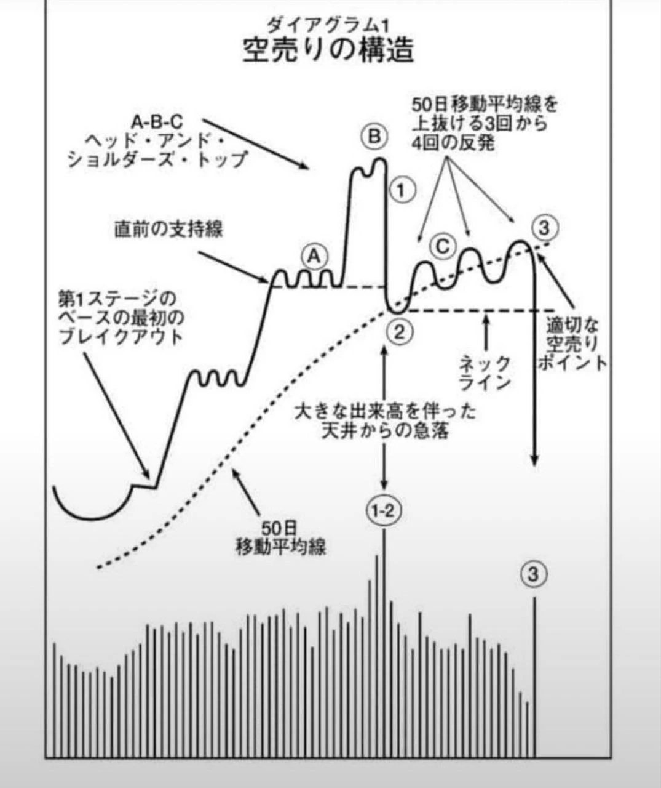

1
図の正体 — 米国株の古典が描いた「天井の設計図」
下の図は、米国株投資の古典『オニールの空売り練習帖』に載っている有名な図版「ダイアグラム1」です。描かれているのはヘッド・アンド・ショルダーズ・トップ（三尊天井）が完成していく全工程 — つまり「上昇相場の天井は、一瞬ではなく手順を踏んで作られる」という観察です。

『オニールの空売り練習帖』（G・モラレス／W・J・オニール）ダイアグラム1 より引用（教育目的の解説のための引用です）
この図が有名なのは、形そのものより「順序の規律」を教えているからです。原典の核心は一行に要約できます — 「天井(B)を売ろうとするな。最初の急落でも売るな。戻りの失敗を確認してから動け」。
2
部品の読み方 — 5つのステップ
- B（頭）
- 上昇トレンドの最後の高値。この時点では誰にも「ここが天井」とは分かりません — だから原典は「天井を売るな」と言います。
- ①→②（最初の合図）
- 大きな出来高を伴った天井からの急落。下の出来高チャートで最大の棒が立つ場所です。意味は「大口（機関投資家）が売り抜けている痕跡」。価格の下げ幅より、大商いで直前の支持線と50日移動平均線を割ったことが一次証拠になります。
- C（右肩＝罠の反発）
- 急落後、50日線を上抜ける反発が3〜4回起きます。これが最重要の観察ポイント。「安くなったから」と買う逆張り勢で戻るものの、50日線の上に定着できず、高値は切り下がっていきます。戻りの出来高が細いことも特徴です。
- ネックライン
- ②の安値水準。右肩の間はここが最後の床として機能します。
- ③（完成）
- 3〜4回目の反発失敗のあと、再び出来高を伴ってネックラインを割れた瞬間がこの図の「完成」。原典ではここが唯一の仕掛け点とされ、それ以前の売りは「踏み上げられる」と戒められています。
なぜ「戻りの失敗3〜4回」を待つのか
最初の急落（①②）だけでは、それが天井形成なのか単なる調整なのか区別がつかないからです。
50日線への戻りが繰り返し失敗する＝上値に売り手が居座っている証拠が積み上がることで、初めて「この下げは本物」と確認できる — 回数は、確証を買うためのコストです。この考え方は売り買いどちらの立場でも使えます。
3
週足に当てはめる — 皆さんが通ってきた相場で、一度「完成」していた
この図を週足で使うときは、50日線を50週移動平均線に読み替えます（同じ構造が約5倍の時間スケールで動く「入れ子」の考え方です）。そして実データに重ねると — 前回サイクルの天井から今年6月の安値までが、この図の教科書的な「完成事例」だったことが分かります。
BTC 週足（2025年1月〜現在）× 50週移動平均線 — 「空売りの構造」が一度完成し、いまは鏡像を試している
青線: 週足終値 ／ 金の点線: 50週移動平均線（自前計算・Binance 週足終値ベース）。ポイントにタッチ/カーソルで数値表示
BTC 週足終値50週移動平均線
週足終値ベースの最高値週は 2025年9月末（約$123,500）。50週線の下抜けは 2025年11月10日の週 — 配信で「2025年11月の状況を当てはめるのか」という問いがありましたが、実データでもまさに2025年11月が図の①②に当たります。
重要な結論: 直近の週足では、この図は発動していません。価格はまだ50週線の上（+3.4%）にいて、図の出発点である「基準線割れ（②）」の手前にすらいないからです。いまの週足の文脈はむしろ逆 — 前回高値を上回り、底打ちの構造（この図の鏡像）を作ろうとしている側です。
4
日足に当てはめる — 「③に似た形」が出た。ただし成否はまだ決まっていない
一方、日足スケールではこの図の縮小版に見える形が進行中です。9月高値のあと50日線を下抜け、戻りが2回失敗し、10/30 に大出来高の急落 — ここまでは図のとおり。しかし3つの点で教科書と違います。
BTC 日足（2026年8月〜現在）× 50日移動平均線 — 進行中の「縮小版」と、その成否を分ける2本のライン
青線: 日足終値 ／ 金の点線: 50日移動平均線（自前計算）。赤破線: ネックライン候補 $76,326。ポイントにタッチ/カーソルで数値表示
BTC 日足終値50日移動平均線ネックライン候補
10/30 のザラ場安値 $76,326 は、50週線帯（$75.7K）と 6月安値→9月高値の 38.2% 押し（$76,090）が重なる支持帯のすぐ上で停止しました。
教科書との差分3点（＝まだ「発動した」と言い切れない理由）:
- 戻りの回数が足りない — 原典は「3〜4回の失敗」を求めますが、現状は2回。原典の思想では、むしろ今は「まだ確証が足りない」段階です。
- 引き金が外部イベント — 10/30 の急落は大口の計画的な売り抜けではなく、取引所ハックによるパニックの投げでした。出来高の「質」が教科書の想定と異なります（イベント起因の投げは戻りも速い傾向）。
- 割れた直後に支持帯で止まった — 教科書の③はネックライン割れ後に下へ走る形ですが、実際は50週線帯＋38.2%押しで即反発。これは「③が発動したが失敗しつつある（売り方が焼かれるダマシ）」という逆の読みも同等に成立する状態です。
5
結論 — 流派が違っても、地図の折り目は同じ2本
今週のレポートで扱ったエリオット波動（調整はどこで終わるかの地図）と、この「空売りの構造」（天井はどう作られるかの地図）は、立場の違う2枚の地図です。ところが見るべきラインは全く同じ場所を指しています。
受講生の皆さんへの「行動への翻訳」
- 急落の一発目で慌てて投げない — この図自身が「最初の急落では動くな」と教えています。確認すべきは次の「戻りの質」です
- 戻りを見る目を持つ — 戻りが50日線の上に定着できるか・出来高を伴うか。「上がった」ではなく「定着したか」が問いです
- 退避の地図として使う — $76,326 の大出来高割れは、当教室の警報器とは別系統の「チャート側の退避シグナル」として覚えておけます
注意書き
本ページは値動きの構造を学ぶための教育資料であり、
空売りを含む特定の取引の実行をすすめるものではありません。原典の統計は米国個別株に基づくもので、24時間取引の暗号資産では移動平均線や出来高の機能にズレがあり得ます。記載の価格・日付は作成時点の実測値です。